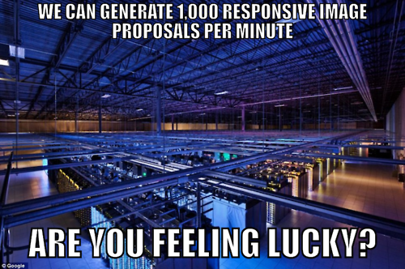
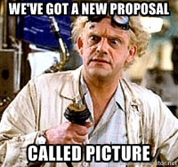
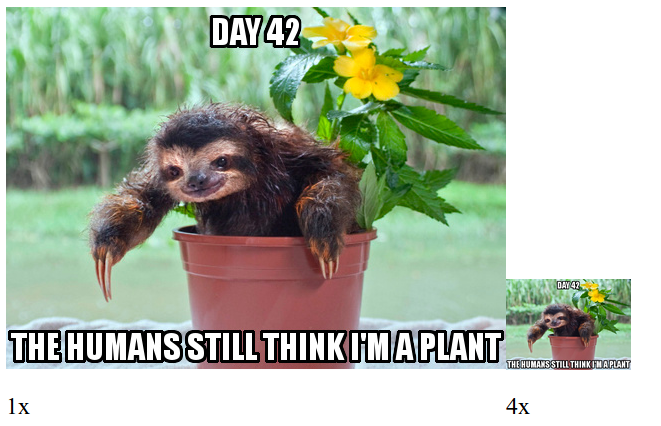

Who????


- Srcset & Picture implementation
What is Responsive images?
People demanded a solution
Turned to the mailing lists

And the RICG was born

2 years later
http://www.jokeroo.com/pictures/funny/893657.html
The road there wasn't easy
http://memoirvita28.blogspot.fr/2012/11/the-road-not-taken.html
Src-N
Then some more

And MOAR

Back to picture

And now
Picture 2.0™
The srcset 'x' part
Use case - "Retina images"
Load hi-res images
on hi-res devices

The syntax
<picture>
<source media="(min-width: 45em)"
srcset="large.jpg 1x, large-2x.jpg 2x">
<source media="(min-width: 18em)"
srcset="medium.jpg 1x, medium-2x.jpg 2x">
<img src="small.jpg" srcset="small-2x.jpg 2x"
alt="The president.">
</picture>
Or even
<img src="small-1x.jpg" srcset="small-2x.jpg 2x"
alt="The president.">
Use case - Art direction

Use case #2 - Mime type fallback

The syntax
<picture>
<source media="(min-width: 45em)" srcset="large.jpg">
<source media="(min-width: 18em)" srcset="medium.jpg">
<img src="small.jpg" alt="The president.">
</picture>
The <img> is not optional
<picture>
<source media="(min-width: 45em)" srcset="large.jpg">
<source media="(min-width: 18em)" srcset="medium.jpg">
<img src="small.jpg" alt="The president.">
</picture>
The sizes + srcset 'w' descriptor part

http://ericportis.com/posts/2014/srcset-sizes/
use case - variable width images

The syntax
<picture>
<source media="(max-width: 80em)"
sizes="(max-width: 30em) 100vw,
(max-width: 50em) 50vw,
calc(33vw - 100px)"
srcset="pic100.jpg 100w, pic200.jpg 200w,
pic400.jpg 400w, pic800.jpg 800w, pic1600.jpg 1600w,
pic3200.jpg 3200w">
<img src="otherpic.jpg" alt="The president giving an award.">
</picture>
Or even
<img src="otherpic.jpg" alt="The president giving an award."
sizes="(max-width: 30em) 100vw,
(max-width: 50em) 50vw,
calc(33vw - 100px)"
srcset="pic100.jpg 100w, pic200.jpg 200w,
pic400.jpg 400w, pic800.jpg 800w, pic1600.jpg 1600w,
pic3200.jpg 3200w">
Gotchas
http://jaddid.com/bear-trap/attachment/4650/
Intrinsic sizing

'w' descriptror without 'sizes'
100vw is the default
Old 'w' syntax
Styling
"Picture is a magical span, nothing more"
- Tab Atkins
Mixing 'x' and 'w'
A big no no
<img srcset="pic200.jpg 100w 2x, pic200.jpg 200w, pic400.jpg 400w,
pic800.jpg 800w, pic1600.jpg 1600w, pic3200.jpg 3200w">

Picturefill
The official RICG polyfill
Worked on by the Filament Group, and other contributors
Double download
Old 'w' syntax polyfill
Future compat
Feature detection FTW!
HTMLImageElement.sizes
&
HTMLPictureElement